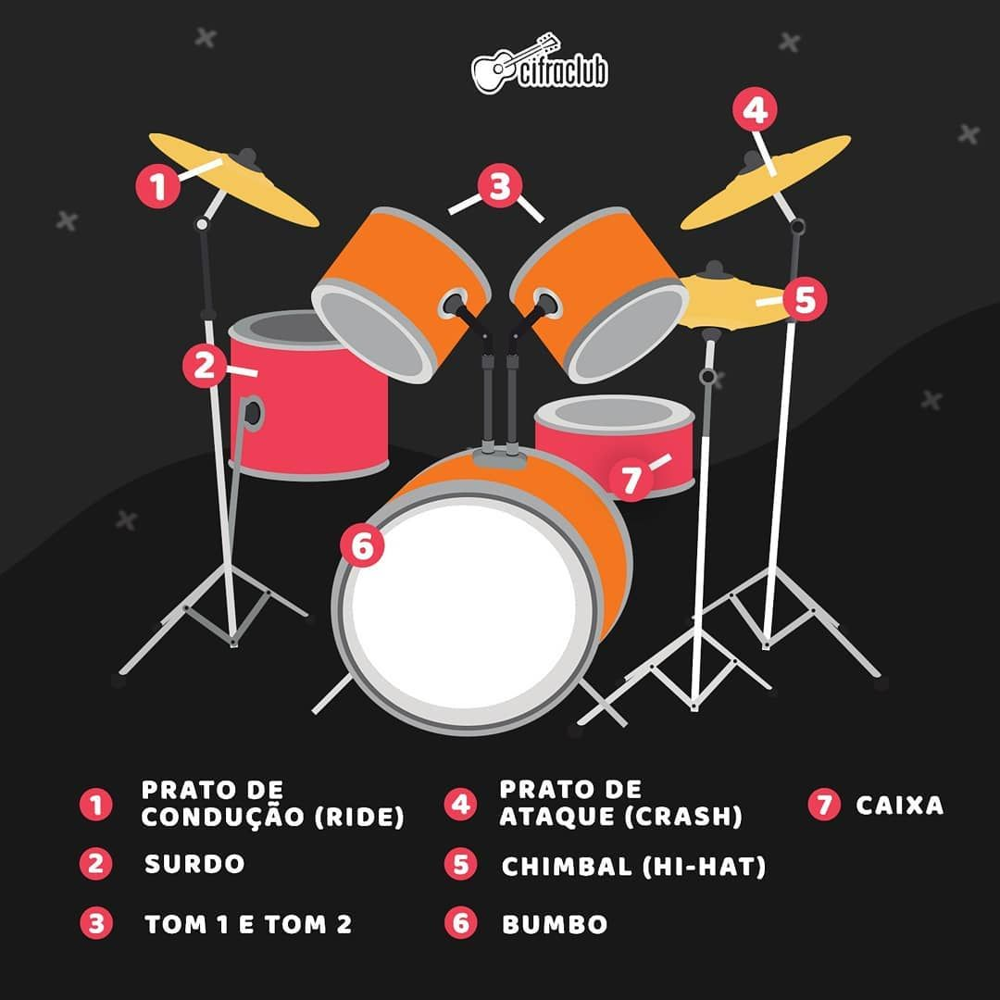
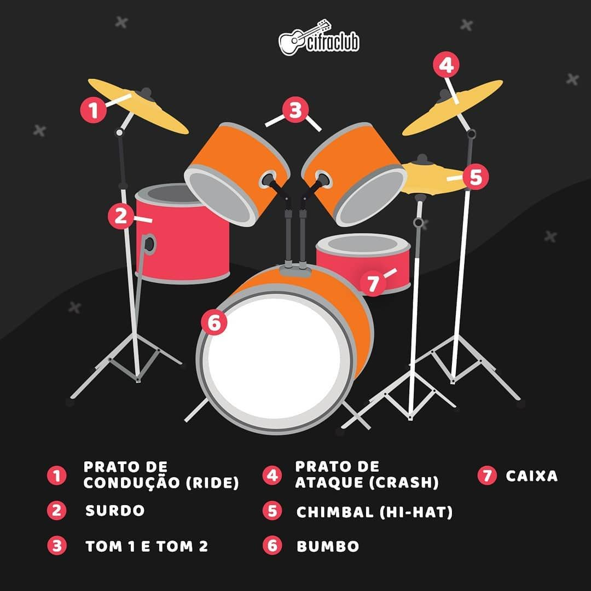
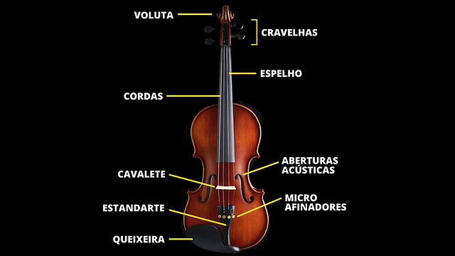
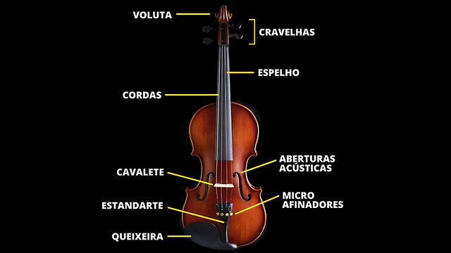

Instrumentos musicais
A bateria é um instrumento fácil de ser tocado, porém, complexo para ser aprendido, pois exige muita coordenação motora.
A bateria é um conjunto de tambores (de diversos tamanhos e timbres) e de pratos e outros instrumentos de percussão colocados de forma conveniente com a intenção de serem percutidos por um único músico, denominado baterista, geralmente, com o auxílio de um par de baquetas, vassourinhas ou bilros segurados por ambas as mãos, embora, em alguns casos, certos executantes possam também usar as próprias mãos nuas para percutir o instrumento em questão.
 

Já o violino é mais complexo nos dois fatores, exige muita paciência e persistência, além de calma.
Geralmente, possui quatro cordas, afinadas da aguda à mais grave, e um timbre semelhante ao soprano feminino. Contudo, é possível produzir sons mais aveludados se alterada a forma de tocar o instrumento.
 

------DICAS------
- Trabalhe sua coordenação motora
- Procure anotar os ensinamentos
- Não fique desesperado
- Tenha paciência e força de vontade